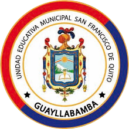
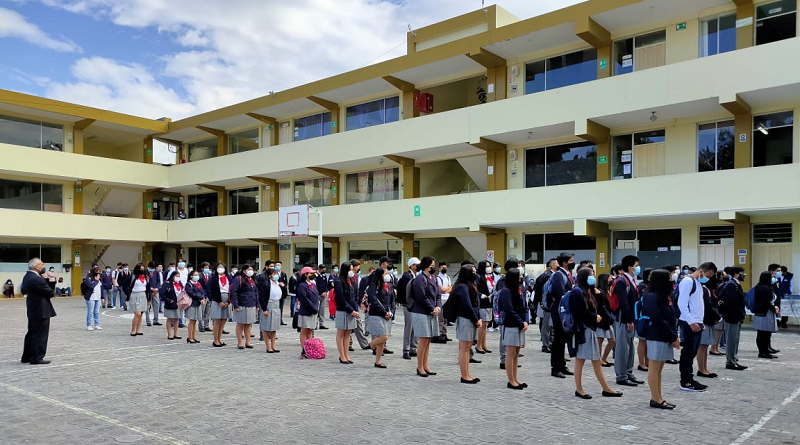

Somos una Unidad Educativa Municipal que desarrolla conocimientos cientifico-tecnológico con un modelo socio-constructivista, que forma seres humanos integros éticos, críticos, reflexivos, con calidad y calidez, capacidad de liderazgo, respetuosos con la vida y la naturaleza preparados para desencilcerse en cualquier campo profesional y productivo Institucion Educativa Municiapl que brinda uan educacion integral, incluyente com y calidez a través de proyectos socio-educativos. ecologicos, productivos, tecnologicos, formando seres humanos proactivos, eticos, driticos, reflexivos, con conciencia ambiental, que practican valores, se preparan para la vida y comprometidos con un cambio social.

Fundada el 6 de diciembre de 1961, lleva su nombre precisamente en conmemoración de la celebración de la Fundación de San Francisco de Quito.